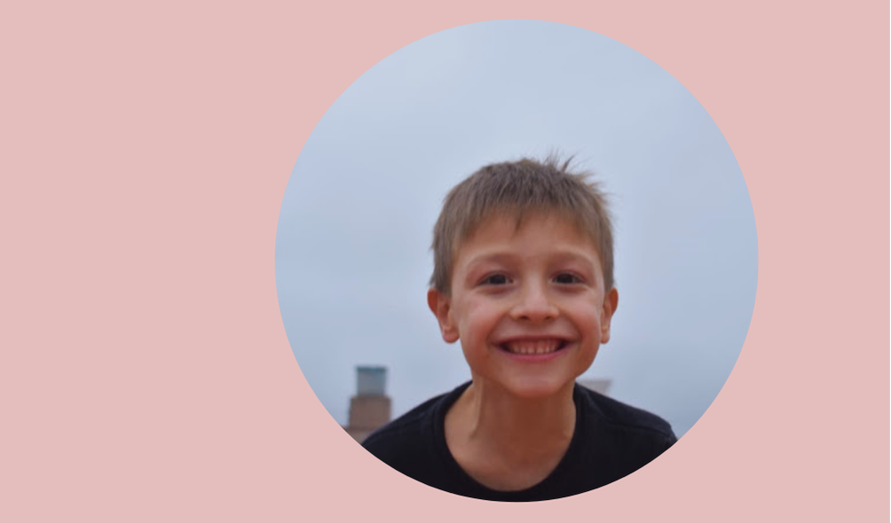
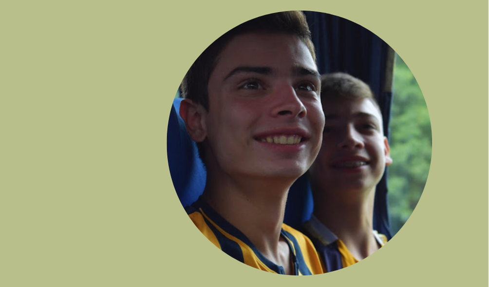

A little about me
My love for photography began at the age of 15 when I received my first camera as a gift. Since then,
I have been capturing special moments and exploring the world through the lens, transforming
everyday life into visual art. Through my work, I hope to share the beauty and emotion I find in
each photograph.

Celebrating Life's Moments
Photography is not just about capturing images; it's about preserving memories and celebrating life’s
fleeting moments. Each photograph tells a story, evokes emotions, and creates a connection between
the viewer and the subject. I believe that every picture holds the power to bring joy and nostalgia,
reminding us of the beauty that surrounds us every day. It is through this lens that I strive to
inspire others to appreciate the little things in life and cherish their own stories
Let's Connect Through Photograph
I invite you to explore my photography portfolio and discover the stories behind each image. Each
photograph is a reflection of my journey, passion, and creativity. Whether you're looking for
inspiration or simply want to appreciate the beauty captured in everyday moments, I hope my work
resonates with you. Join me in celebrating the art of photography and let’s connect through the
shared joy of visual storytelling.
